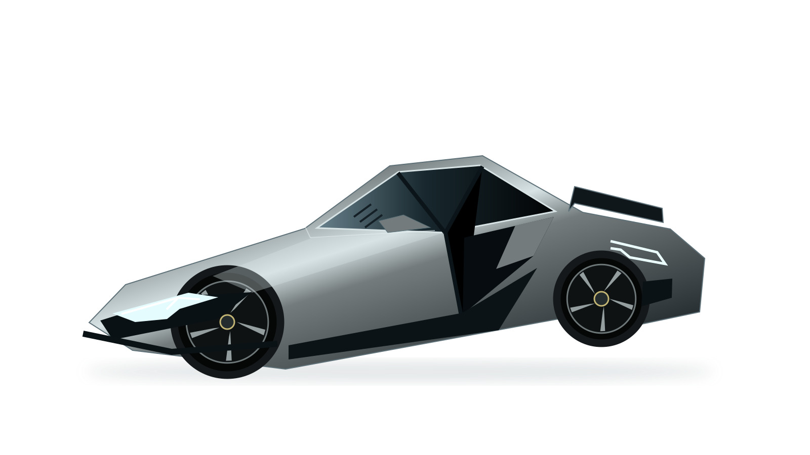
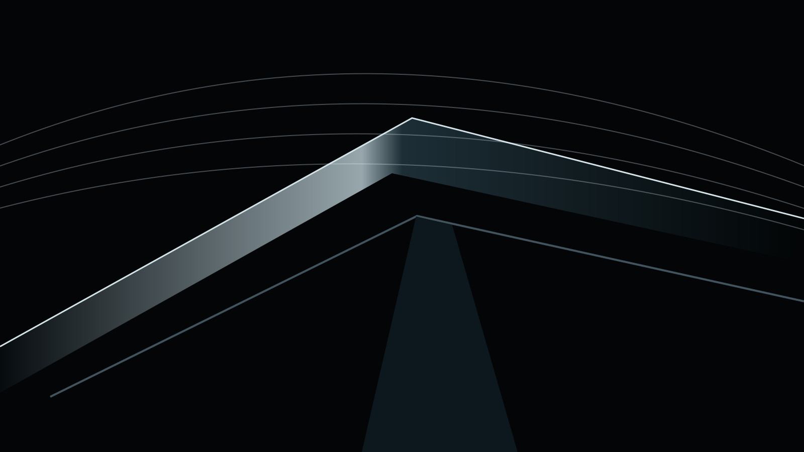

01 / THE REVEAL
6 秒原创无声镜头 · 非实车驾驶影像
01 / FORM
THE LOWEST
POINT OF VIEW.
棱线不是装饰。它是光线与空气在车身上留下的共同轨迹。极低的车顶、前移的座舱与收紧的腰线，构成 RIFT 的楔形比例。
- BODY STUDY
- WEDGE COUPÉ
- COCKPIT
- 2 SEATS
- DESIGN SERIES
- 01 / 2026

02 / AERODYNAMICS
AIR HAS
A DIRECTION.
从前部导流口到独立尾翼，观察气流如何参与造型。这是视觉概念，不包含风洞验证或下压力数值。
03 / YOUR EXPRESSION
CHOOSE
YOUR EDGE.
三种表面，一副不会退让的轮廓。
TITAN / 冷银金属，让折面接住夜间的光。